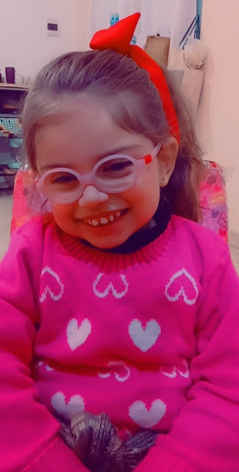
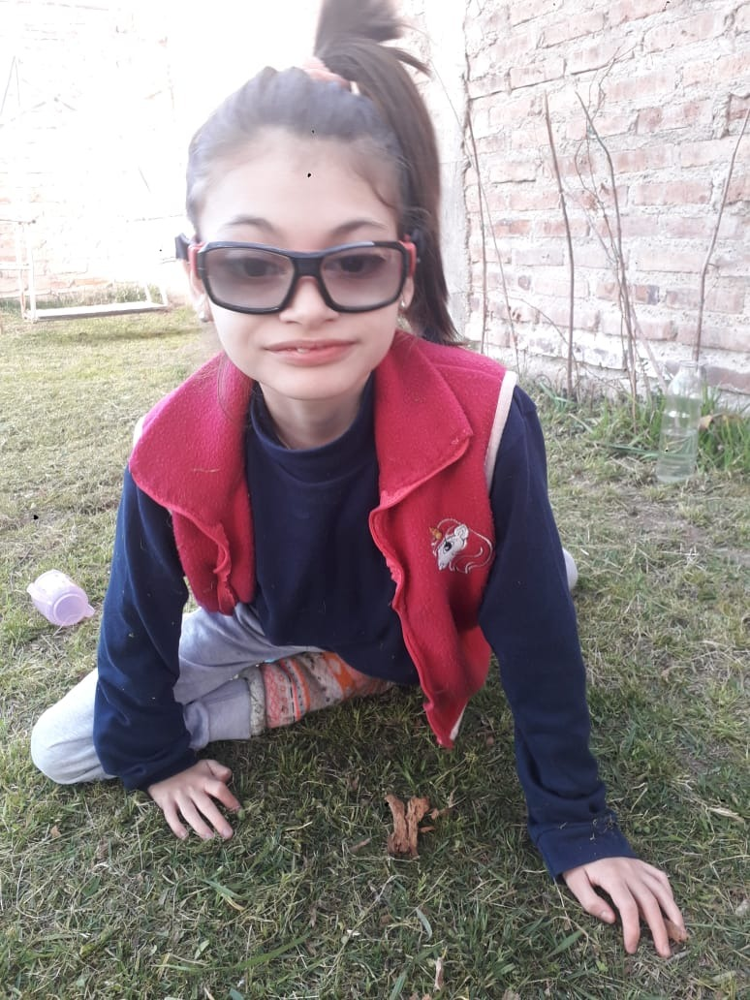
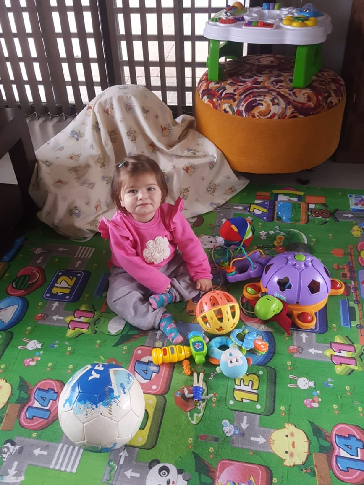

NOSOTROS
La Asociación de Afectados CDKL5 es una organización sin ánimo de lucro constituída en 2014 principalmente por padres y familiares de pacientes afectados de dicho trastorno.
Su misión principal:
- Recaudar fondos destinados a la investigación del CDKL5 y otras enfermedades relacionadas.
- Obtener y gestionar recursos para proporcionar apoyo y mejora de la calidad de vida de las personas afectadas y sus familias.
- Dar visibilidad del trastorno en el ámbito clínico sanitario y social.
- Promover encuentros entre familiares afectados, médicos especialistas e investigadores de ámbito nacional e internacional.
- Apoyar y participar en programas de cooperación Internacional Member of CDKL5 Alliance.

«Una comunidad que trabaja unida para acelerar la investigación mediante el trabajo en equipo, la colaboración y los valores compartidos. «
El apoyo es vital para las familias CDKL5. Tras el diagnóstico, las familias deberían ser dirigidas a la asociación de su país para que obtengan información y apoyo.
Cooperación entre el equipo médico y las familias.
Para alcanzar este objetivo, se está creando "La base de datos internacional de la alianza CDKL5", que busca participación y aportación de datos tanto médica como de pacientes.
El apoyo es vital para las familias CDKL5. Tras el diagnóstico, las familias deberían ser dirigidas a la asociación de su país para que obtengan información y apoyo.
Cooperación entre el equipo médico y las familias.
Para alcanzar este objetivo, se está creando "La base de datos internacional de la alianza CDKL5", que busca participación y aportación de datos tanto médica como de pacientes.
FAMILIAS ARGENTINAS
Catalina Genen


Actualmente de 10 años de la provincia de Neuquén.
A los 3 años fue diagnosticada con el síndrome CDKL5, pero los síntomas de esta enfermedad comenzaron cuando apenas nació, ya que fue una bebe que lloraba continuamente y dormía muy poco.
Al mes y medio de vida comenzaron las convulsiones que hasta el día de hoy persisten diariamente.
Puede caminar con ayuda, tiene alteraciones sensoriales, problemas de deglución, no puede hablar, tienen convulsiones todos los días, es hiperlaxa, tiene problemas de sueño, le molesta el ruido y sufre de problemas intestinales y estomacales, entre otras tantas dolencias…
Ha vivido situaciones difíciles en su corta edad, pero se ha sobrepuesto a todo. Tiene 10 años y en este tiempo aprendió a sonreír, a bailar, a andar en bici. Es fanática de los paseos en auto, le encantan las hamacas y los árboles. Su familia anhela un tratamiento y una cura.
Allegra

Ella es Allegra, segunda hija que actualmente tiene 21 meses. De la provincia de Córdoba.
Allegra fue diagnosticada Con el síndrome de deficiencia de CDKL5 cuando tenía 15 meses, luego de realizar un estudio genético.
A los dos meses de vida comenzó con convulsiones. Requirió internaciones para realizar estudios y hasta el día de hoy continúa con crisis, aun así estando medicada.
Alegra asiste a tres tipos de terapias 8 veces por semana que la ayudan a desarrollarse y en casa su familia ayuda para ello. Su familia anhela que los expertos puedan investigar más y tener la cura.
Jimena

Ella es Jimena de 4 años de la provincia de Córdoba.
El síndrome CDKL5 inició a los 6 meses de vida con convulsiones mientras dormía y ante la preocupación sus padres acudieron a la guardia médica y ahí comenzó su internación para determinar el origen de las crisis.
Entre ellos el estudio genético que confirmaría meses después la enfermedad CDKL5.
Como no se conoce mucho sobre esta enfermedad rara, su familia espera que se visibilicen los casos para tener mayor conocimiento.
Su familia abraza fuerte a todas las familias que tienen un niño con CDKL5 y que con fe y esperanza esperan la cura.